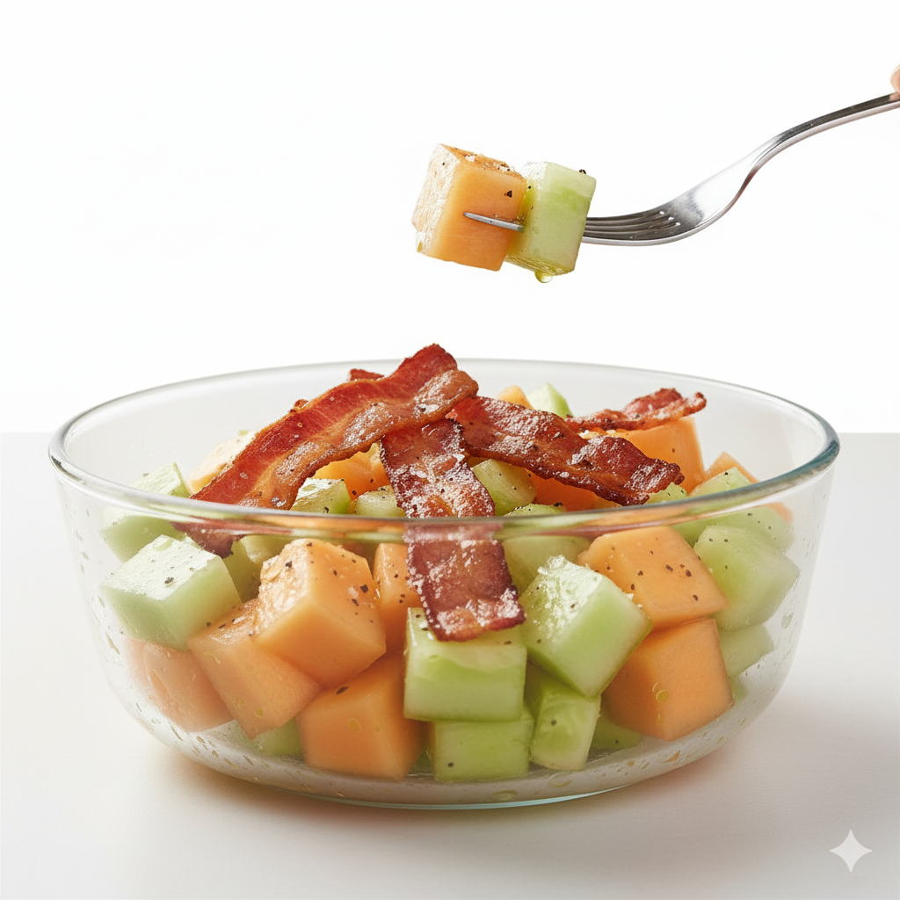
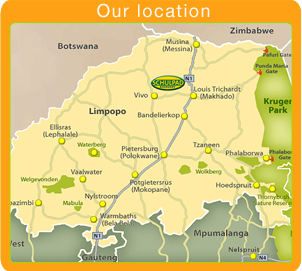

Rooted in Quality, Grown with Passion
Delivering farm-fresh melons and peppers from the heart of Limpopo since 1999.
A Legacy of Freshness
Since 1999, Schulpad Boerdery has been a family-run farm dedicated to cultivating the finest muskmelons, honeydew melons, and peppers. Our legacy is built on a simple promise: to produce high-quality, delicious, and safe produce for your family to enjoy.
Our Signature Harvest
Grown under the African sun, our produce is packed with flavour.
Sweet Melons
We cultivate delicious muskmelon and honeydew varieties all year round, ensuring a constant supply of sweet, juicy fruit.
View MelonsGreenhouse Peppers
We produce vibrant red and yellow peppers, grown in specialized greenhouses to optimize for quality and size.
View PeppersOnions
Our onions are carefully cultivated to deliver a crisp texture and rich flavour, perfect for a wide variety of culinary uses.
View OnionsFresh & Delicious Recipes
Discover creative and flavorful ways to enjoy our farm-fresh melons and peppers. From refreshing summer salads to savory main courses, find your next favorite meal right here.
 View RecipesOur Location
Schulpad Boerdery is situated 70km north-west of Louis Trichardt, close to Waterpoort, in the Limpopo Province of South Africa. Schulpad is an Oasis of produce in harsh bushveld, where baobab trees line the roads.
 View Location